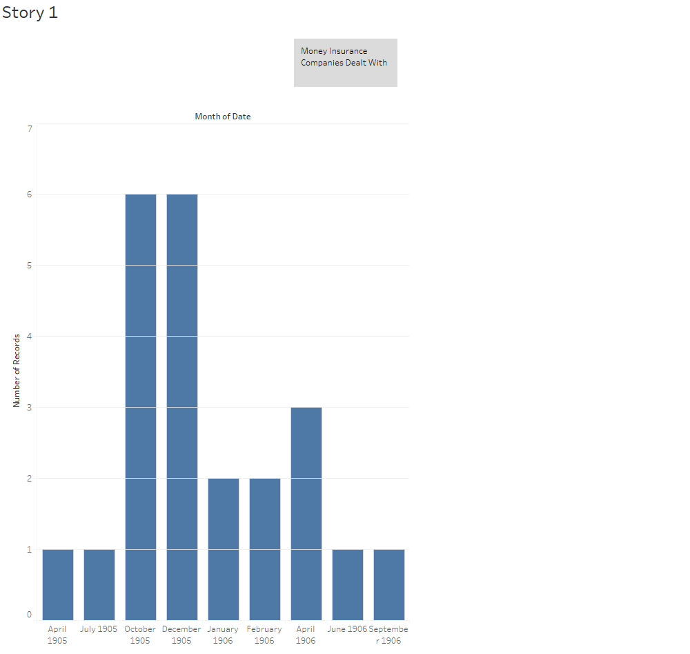

Insurance is “a thing providing protection against a possible eventuality.” It is believed that during the time the Egyptian Gazette was being published that the idea of insurance was first established. Insurance is simply used just to insure someone's property while they pay a fee to have the service in case the worst happens. My first encounter of any type of insurance in the Egyptian Gazette when I ran my XPath query was the mention of “fire insurance.” A company name Messrs is the company that sells the fire insurance. I assume fire insurance would simply just be to insure a person's possessions against damage and loss against fire damage. This definitely shows a glimmer of the future of the modern world of insurance.
On March 11, 1905 there is a mention of a sunken or wrecked ship. The ship's cargo is mentioned and that it's being attempted to be salvaged. This salvaging is actually mentioned before the talk of insurance agents and that they are attempting to assess the damage themselves. This is basically the same as a modern day insurance quote. On April 6, 1905 a theater that was built in 1834 burned to the ground after a fire that broke out could not be contained. The paper speaks of the insurance company reaching a settlement with the proprietor of the theater. So here's another example of insurance companies coming to terms with someone and reaching a settlement just like modern day insurance works.
AUSTRALIA IN EGYPT AND THE SOUDAN THE NATIONAL MUTUAL LIFE ASSOCIATION OF AUSTRALASIA, LIMITED FUNDS OVER… … … … $3,900,000 ANNUAL INCOME OVER $700,000 Up to 13th Degree of Latitude including KHARTOUM insurances effected at the same rates as in Egypt and England. This great Office is renowned throughout the Empire for its LOW RATES LIBERAL CONTRACTS LARGE BONUSES Special Features Single Payment Age 48 with Profits Absolutely the Lowest rate of all Companies The Best Office for Annuities Return generally per cent per annun more than most Offices. In some instances the difference. It is as great as 2 per cent per annum Special Privileges Children's Endowments at Age 21 All Premiums returnable with 4 per cent interest if child die. All Premiums cease on Father's death. LOCAL BOARD SIR WILLIAM WILLCOCKS K.C.M.G Chairman R HENRIQUES Esq Director
This is a detailed insurance plan for annuities and life insurance the first I had seen throughout all the issues of the Gazette. Before we had only seen insurance cover loss of possessions not the loss of life or to provide an annuity. “An annuity is a long-term insurance contract sold by an insurance company designed to provide an income, usually after retirement that cannot be outlived.” This is a very advanced idea compared to the simple loss of possession insurance we had seen previously. This idea I had not seen in the previous editions of the Gazette so it shows some advancement in the world of insurance due to the era modern day insurance. This plan even had a life insurance clause for children. This advancement in insurance surely helped to transform the idea of insurance. On July 29, 1905 the theft of $1,000 from a ship was documented. It was reported that the losses were covered by insurance so again this is the loss insurance that I discussed earlier. So we've so far seen life, retirement, property, and loss insurance.
A slight outbreak of fire occur at 16, Rue Abou Dardar, Alexandria, the other day but was quickly extinguished. The damages could not be recovered from the insurers, “La Polar” Sociere Anonyme d’Assurances, Bilbas, but M G. Kaul. agent of the insurance company, very generously subscribed the whole amount The house in which the fire broke out is a ladies’ pension which is managed by the Religious Sisters of Notre Dame de Delivrande.
This is an incident where the insurers did not dole out a insurance quota for the damage that was done because it was lesser damage. So now we are starting to see limitations on insurance policies and the money that insurers are willing to dole out for damages. These limitations are not fully defined though I feel that it is safe to assume only because the damage was minor that's why the insurers were not willing to pay for the slight damages and then referred the damages to the client instead saying they basically can cover it with their own pension. This was said sarcastically in the quote I pulled from this edition of the Gazette. So not only do we see limitations but we are also starting to see almost an affront attitude towards from the insurers to people who seek payment over lowly damages.
The Homs-Hama extension served to develop, considerably the traffic of the company, and, as a natural corollary, widened the scope of. the commercial activities of Beyrout, while it reduced the port of Tripoli to a nullity. All the exports of wool and grain that used to find outlet at Tripoli have been diverted to Beyront, thanks to the railway. The advantages of rail carriage are manifestly superior to transport by the primitive means of camel and mules. Besides the economy of time and punctual delivery, more or less, there is the fact of greater security, which is an important consideration for the insurance. But the narrow line of Beyrout seems to fail to answer the requirements of the traffic, and fulfil all these advantages. The grain crops of the Homs and Hama districts being exceptionally abundant this year, it is estimated that no less than 40,000 tons of barley, beans, etc. but chiefly of the first-named article, will be destined for exportation. But I have heard it said that the railway company frankly avowed its inability to carry more than half of this quantity, and the remainder will have to lie over till next year or be transported on camel back to Tripoli As our grain exports are chiefly destined for the United Kingdom, the matter necessarily affects British maritime interests, for loading in a sheltered harbour is infinitely more expeditions than in an open roadstead, and quick despatch is a matter of vital importance to shipping. The present director is doing his best to cope with this increased demand of commerce, and they say that in addition to the six trains that have heretofore been running each way daily between Rayak and Beyrout, another eight trains are to be farther put in use. But the evil is inherent and lies in the defectiveness of the line both to respect of its narrowness and steepness. The tonnage capacity of the trains is by far too restricted.
This excerpt was taken from the September 5, 1905 issue of the Gazette. This excerpt speaks of the transportation and safety of using the railway rather than primitive methods of camelback. The issue of insurance is barely mentioned but it speaks of the safety that is guaranteed by the railway insurance. This insurance on such a scale when it comes to 20 tons of goods is on a massive scale of loss insurance that we have not previously seen in the previous issues of the Gazette. Again the transformation of insurance is obvious given the scale of this.
We should like to call the attention of our readers to the appeal published in our issue of yesterday on behalf of the National Committee for the establishment of sanatoria for workmen suffering from tuberculosis. The importance of the subject from a national point of view is enormous, for no country suffers more than Great Britain from this terrible malady, and in no country are the signs of physical degeneration more apparent among sections of the working classes. The yearly loss of life among the working classes of London alone from this cause equals the death roll of the greatest battles that have been fought, and the direct and indirect loss to the community must be proportionately heavy. Moreover the partial segregation of cases, which is so necessary in this disease cannot be applied in the case of the sick among the working classes, for financial reasons. The great employers of labour in Germany have constructed sanatoria for the special use of their workmen and have benefited both themselves and the nation. The German insurance companies have followed suit and in consequence the mortality from the disease in Germany has enormously decreased in the last fifteen years.
This is the first sign of health insurance in the Gazette that I have seen. Again this is another profound transformation in the field of insurance. So now we have seen many different types of insurance in the age of the Gazette. There is life, retirement, loss, fire, and health insurance available during this time. During this time we also find our first case of bankruptcy within the gazette of an American Insurance company and its inability to pay back its consumers. The only problem with this research was that it was so hard to find anything to make a visual analysis about. The Gazette also uses the word insurance for a lot of things that just aren't insurance so that did not help either. It's interesting to think that modern insurance started in this time.
